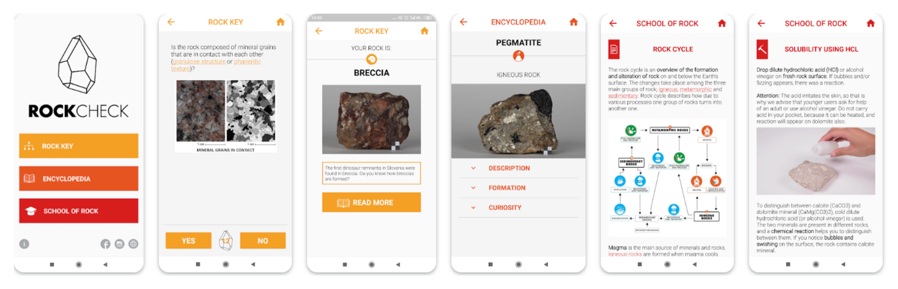
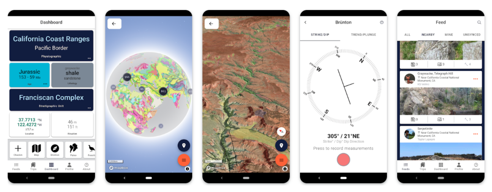

Top Rock Identifier Apps: A Comprehensive Review

In today's digital age, the convenience and accessibility of technology have made the identification of rocks and minerals more attainable than ever before. Rock identifier apps have rapidly gained popularity among geology enthusiasts, rockhounds, and even amateur collectors. Rock collecting, geology studies, and even casual curiosity have all benefited from the rise of rock identification apps.
These handy tools use a combination of image recognition, machine learning algorithms, and vast geological databases to help users quickly and easily identify rocks, minerals, gems, and sometimes even fossils. They offer a user-friendly interface that allows individuals to identify various rocks, minerals, gems, and fossils with just a few taps on their smartphones.
In this comprehensive comparative review, we will delve into some of the top rock identifier apps available in the market, discussing their features, accuracy, usability, and overall performance.
How Rock Identifier Apps Work
Before we dive into the specifics of each rock identifier app, it is essential to understand how these applications work. The underlying technology that powers these apps is primarily image recognition software combined with extensive geological databases of rocks, minerals, gems, and fossils. The process typically unfolds as follows:
- Image Capture: The process typically begins with the user taking a clear, well-lit photo of the rock in question. Some apps might guide users on the optimal angle or lighting for the best results.
- Image Analysis: The app analyzes the image, looking for key characteristics like color, texture, crystal structure, and any unique patterns or markings.
- Database Comparison: The app compares the analyzed features against its extensive database of known rocks and minerals. This database can contain thousands of entries, each with detailed information.
- Identification & Additional Information: The app suggests the most likely matches, often providing a percentage of confidence in the identification. Many apps offer additional information about the identified rock, such as its geological formation, uses, properties, and value.
The Accuracy Question: Separating Fact from Fiction
The accuracy of rock identifier apps can vary significantly, influenced by factors such as the quality of the image, the app's database size, and the complexity of the rock itself. While these apps offer a convenient starting point, it's important to remember they are not infallible. Misidentifications can occur, especially with rocks exhibiting subtle variations or those not adequately represented in the app's database.
For more precise identification, consider consulting a professional geologist or conducting additional tests like streak tests, hardness tests, or even chemical analysis.
Top Rock Identification Apps: A Comparative Overview
1. Identifier (by Stone Identifier)

Rock Identifier, developed by Stone Identifier, is a popular choice among rock enthusiasts for its comprehensive database and user-friendly interface. This app boasts a vast collection of rocks, minerals, gems, and fossils, making it a valuable tool for both amateurs and professionals. The image recognition technology used in Rock Identifier is highly accurate, providing reliable identifications in a matter of seconds. Furthermore, the app offers detailed information about each specimen, including its geological properties, formation process, and historical significance. Rock Identifier is available for both iPhone and Android devices, making it accessible to a wide range of users.
2. RockCheck
RockCheck is another notable rock identifier app that stands out for its simplicity and ease of use. This app is specifically designed for rockhounds and amateur collectors who want a quick and reliable way to identify rocks and minerals on the go. RockCheck features a user-friendly interface that allows users to snap a photo of a specimen and receive an instant identification. While the app may not have the extensive database of some other rock identifier apps, it excels in providing accurate identifications for commonly found rocks and minerals. RockCheck is available for both iPhone and Android devices, catering to a broad user base.
3. Geology Toolkit

Geology Toolkit is a comprehensive app that goes beyond rock identification to offer a wide range of geological tools and resources. In addition to its rock identification feature, this app includes tools for measuring geological structures, plotting geological maps, and analyzing mineral properties. Geology Toolkit is a valuable tool for geologists, students, and professionals who require advanced geological capabilities on their mobile devices. While the rock identification feature may not be as prominent as in other dedicated rock identifier apps, Geology Toolkit offers a holistic approach to geology education and exploration. The app is available for both iPhone and Android devices.
4. Rockd
Rockd is a visually engaging rock identifier app that combines image recognition technology with social networking features. Users can not only identify rocks and minerals using Rockd but also share their discoveries with a community of like-minded individuals. The app allows users to create personalized collections, participate in challenges, and follow other users to stay updated on the latest finds. Rockd offers a unique blend of identification and social interaction, making it a favorite among rockhounding enthusiasts. The app is compatible with both iPhone and Android devices, providing a platform for rock enthusiasts to connect and explore together.
5. Mineral Identifier
For those specifically interested in mineral identification, Mineral Identifier is a top choice among rock identifier apps. This app focuses on a vast database of minerals from around the world, offering detailed information about each specimen's chemical composition, physical properties, and geological significance. Mineral Identifier features a user-friendly interface that allows users to search for minerals based on various criteria, making it a valuable tool for mineral collectors, geologists, and students. The app's accuracy and comprehensive database make it a must-have for anyone interested in exploring the world of minerals. Mineral Identifier is available for both iPhone and Android devices.
Top Rock Identification Apps: A Comparative Overview
| App Name | Platform | Key Features | Pros | Cons | Free or Paid |
|---|---|---|---|---|---|
| Rock Identifier (Stone Identifier) | iOS & Android | Extensive database, user-friendly interface, additional info on properties, formation, uses. | Accurate, educational, integrates with rockhounding community features. | Can be less accurate with uncommon rocks, some advanced features require subscription. | Freemium |
| RockCheck | Android | Detailed geological descriptions, 3D models of rocks and minerals, curated collection features. | High-quality visuals, great for learning, strong focus on educational content. | Smaller database than some competitors, iOS only. | Paid |
| Geology Toolkit | Android | Comprehensive suite of tools (compass, map, GPS), rock identification is one module within the app. | Multi-functional for field geologists, offline maps, robust rock ID database. | Can be overwhelming for beginners due to extensive features, not solely focused on rock ID. | Freemium |
| Rockd | iOS & Android | Sleek interface, quick identification, community-based identification (help from experts). | Fast, easy to use, social aspect can be helpful for tricky identifications. | Database still growing, less detailed info than some other apps. | Free |
| Mineral Identifier | iOS & Android | Specializes in minerals, detailed crystallography info, links to external resources. | Excellent for mineral enthusiasts, strong on scientific details. | Not as comprehensive for general rock types. | Paid |
Other Notable Apps
- Smart Geology Mineral Guide: A free app with a focus on minerals.
- Garden Answers Plant & Disease Identifier: While not specifically for rocks, this app can be helpful for identifying geological formations and environments.
- Fossil Finder: A specialized app for identifying fossils.
RELATED TOPIC: A Comprehensive Guide: How to Identify Minerals and Rocks for Rockhounding Enthusiasts
Choosing the Right App for You

The best rock identifier app for you depends on your needs and interests. Consider the following:
- Level of Expertise: Are you a casual enthusiast, a serious rockhound, or a professional geologist? Beginners might prefer user-friendly apps with clear explanations, while experienced geologists might prioritize comprehensive databases and advanced features. Choose an app tailored to your level of expertise and interests.
- Database Size: A larger database increases the chances of accurate identification, especially for rarer rocks and minerals.
- Budget: Rock identifier apps range from free to premium versions with subscription fees. Choose an app that fits your budget and offers the features you need. Free apps can be a great starting point, but paid apps often offer more features and accuracy.
- Specific Interests: If you're passionate about crystals or fossils, look for apps that specialize in those areas.
- Platform: Make sure the app is compatible with your device (iOS or Android).
- User Interface: An intuitive and user-friendly interface enhances the overall experience and makes identification a breeze.
- Additional Features: Consider whether you need additional features like field tools, educational resources, or community interaction.
Tips for Using Rock Identifier Apps Effectively
- Clean the Rock: Before taking a photo, try to clean off any dirt or debris that might obscure its features.
- Take Multiple Photos: If possible, take photos from different angles and lighting conditions. This can help the app identify the rock more accurately.
- Use Natural Light: Photograph the rock in natural light whenever possible.
- Consult Other Resources: Don't rely solely on the app. If you're unsure of an identification, consult field guides, online resources, or even a geologist.
The Verdict: Are Rock Identifier Apps Worth It?
Absolutely! Rock identifier apps have transformed the way we explore the geological world, putting a powerful tool in the hands of anyone with a smartphone. They offer a convenient, accessible, and often surprisingly accurate way to identify rocks and minerals, spark curiosity, and deepen our appreciation for the natural world.
While not a replacement for professional expertise, these apps serve as invaluable companions for rockhounds, hikers, students, and anyone with a passion for the wonders of the earth.
Responsible Rockhounding: Ethical Considerations
As you embark on your rock-identifying adventures, remember to prioritize ethical and responsible rockhounding practices. Obtain necessary permits, respect private property, avoid collecting in sensitive areas, and always leave the environment as you met it.
Conclusion
In conclusion, rock identifier apps have revolutionized the way individuals interact with rocks, minerals, gems, and fossils. With their user-friendly interfaces, accurate identification algorithms, and extensive databases, these apps have become indispensable tools for rock enthusiasts of all levels.
Whether you are a seasoned geologist, a budding rockhound, or simply curious about the natural world around you, rock identifier apps offer a gateway to a fascinating journey of exploration and discovery. By comparing the features, accuracy, and usability of top rock identifier apps like Rock Identifier, RockCheck, Geology Toolkit, Rockd, and Mineral Identifier, users can find the app that best suits their needs and interests. So, download your favorite rock identifier app today and start uncovering the hidden treasures of the Earth right at your fingertips.